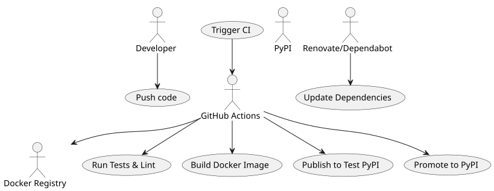
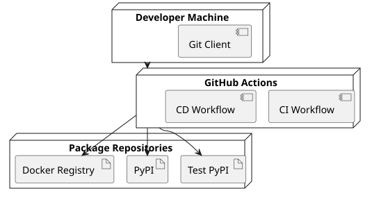

Python CI/CD – Part 3: Going Further with Poetry, Docker, and Advanced Publishing
Published on 19 July 2025
In the first two parts of this series, we have: - Established a functional CI/CD pipeline for a Python application with GitHub Actions and PyPI. - Industrialized this pipeline with multi-version tests, progressive publishing via Test PyPI, and quality and security tools.
In this third part, we are going to gobeyond simple publishing on PyPIto build a complete, robust, and professional CI/CD chain with: - Poetryfor modern packaging and optimized dependency management. - Dockerto create reproducible and multi-platform builds. - Conditional Publishingto manage scenarios such as release candidates. - Automation Tools(Renovate, Dependabot) to keep the pipeline up to date effortlessly.
Integration with Poetry
Poetry replaces old packaging tools (setup.py, requirements.txt) by centralizing dependency and build management in`pyproject.toml`.
Poetry Installation
# Installer Poetry
curl -sSL https://install.python-poetry.org | python3 -
# Vérifier la version
poetry --versionProject Initialization
# Initialiser un nouveau projet avec Poetry
poetry init
# Suivre l'assistant pour renseigner : nom, version, description, licence, dépendances.This generates a`pyproject.toml`file:
[tool.poetry]
name = "playlist-downloader"
version = "0.1.0"
description = "CLI tool for managing YouTube playlists"
authors = ["Christophe Hérolivier <cheroliv@example.com>"]
[tool.poetry.dependencies]
python = ">=3.8"
typer = "^0.9.0"
yt-dlp = "^2023.7.6"
google-api-python-client = "^2.0.0"
google-auth-oauthlib = "^1.0.0"
[tool.poetry.group.dev.dependencies]
pytest = "^7.0"
mypy = "^1.0"
bandit = "^1.7"
safety = "^2.3"
black = "^23.0"
ruff = "^0.1"Adding and installing dependencies
poetry add typer yt-dlp google-api-python-client google-auth-oauthlib
poetry add --group dev pytest mypy black bandit safety ruffPublishing with Poetry
Poetry natively handles publishing:
# Publication sur Test PyPI
poetry publish --build --repository test-pypi
# Publication sur PyPI
poetry publish --buildThis command automatically uses the information present in`pyproject.toml`.
Reproducible Builds with Docker
To ensure identical executions in development, CI/CD, and production, Docker integrates perfectly with Poetry.
Dockerfile Example
FROM python:3.11-slim
WORKDIR /app
COPY pyproject.toml poetry.lock ./
RUN pip install poetry
RUN poetry install --no-root --only main
COPY . .
CMD ["poetry", "run", "python", "cli.py"]This guarantees: - A frozen Python environment. - Locked dependencies via`poetry.lock`. - An image executable on any system supporting Docker.
Integration into GitHub Actions
name: Docker Build
on:
push:
branches: [main]
jobs:
build-docker:
runs-on: ubuntu-latest
steps:
- uses: actions/checkout@v4
- name: Build Docker image
run: docker build -t ghcr.io/${{ github.repository }}:latest .
- name: Push Docker image
run: docker push ghcr.io/${{ github.repository }}:latestConditional Publishing
In a professional pipeline, you must be able to publish only in certain cases: - Release candidates to Test PyPI. - Stable versions to PyPI. - Docker builds triggered only for`main`.
- name: Publish to Test PyPI
if: contains(github.ref, '-rc')
run: poetry publish --build --repository test-pypi
- name: Publish to PyPI
if: startsWith(github.ref, 'refs/tags/v')
run: poetry publish --buildThis approach avoids accidental publications.
Dependency Automation with Renovate and Dependabot
To prevent your dependencies from becoming obsolete, integrate automatic update tools.
Dependabot
version: 2
updates:
- package-ecosystem: "pip"
directory: "/"
schedule:
interval: "weekly"
- package-ecosystem: "github-actions"
directory: "/"
schedule:
interval: "weekly"Dependabot opens PRs every week to update Python and GitHub Actions dependencies.
Renovate
{
"extends": ["config:base"],
"packageRules": [
{
"matchManagers": ["pip"],
"groupName": "python-dependencies",
"schedule": ["before 6am on monday"]
}
]
}Renovate allows for finer control: dependency grouping, scheduling, and advanced rules.
PlantUML Diagrams
Use Case – Advanced CI/CD

Sequence – Conditional Publishing

States – CI/CD Pipeline

Deployment – CI/CD Architecture

Conclusion
In this third part, we have seen how to: - Modernize Python packaging with Poetry. - Guarantee reproducible builds via Docker. - Implement conditional publishing. - Automate dependency updates.
You now have acomplete, industrialized, and secureCI/CD pipeline, ready to evolve with your projects.